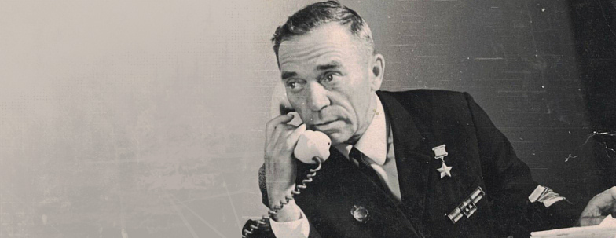

Борис Антонович Микуцкий

Биография
Борис Микуцкий родился в Омске 20 ноября в 1914 году в семье рабочего. В 1917 году его семья переехала в Енисейскую губернию, ныне известную как Красноярский край. В 1936 году Борис был призван на службу в Красную Армию, попав в Приволжский военный округ.
В январе 1940 года Микуцкий вновь был призван в Красную Армию и с января по апрель того же года служил в 119-й стрелковой дивизии, которая была сформирована в Красноярске, и принимал участие в советско-финской войне.
С декабря 1941 года Борис вернулся в Красную Армию, а с сентября 1942 года служил на Закавказском фронте. В качестве командира отделения разведки миномётного дивизиона 7-й Гвардейской стрелковой бригады гвардии сержант Микуцкий неоднократно проявлял храбрость и доблесть в боевых действиях. 15 декабря 1942 года на груди сибиряка появилась первая боевая награда — медаль «За отвагу».
Отличился во время битвы за Днепр. 29 сентября 1943 года Микуцкий переправился через Днепр в районе села Куцеволовка Онуфриевского района Кировоградской области Украинской ССР и принял активное участие в боях за захват и удержание плацдарма на его западном берегу, успешно корректируя огонь своей батареи. Попав в окружение, Микуцкий вызвал огонь на себя, что позволило отбросить противника.
Указом Президиума Верховного Совета СССР от 22 февраля 1944 года за «мужество и героизм, проявленные при форсировании Днепра и в боях на захваченном плацдарме» гвардии старший сержант Борис Микуцкий был удостоен высокого звания Героя Советского Союза с вручением ордена Ленина и медали «Золотая Звезда». После окончания войны Микуцкий был демобилизован. Был также награждён орденами Красной Звезды и Трудового Красного Знамени, рядом медалей. Отважный сибиряк прошёл всю войну до победного конца. После демобилизации вернулся в Сибирь.


{kind=link}
{kind=link}
{kind=link}
{kind=link}
{kind=link}